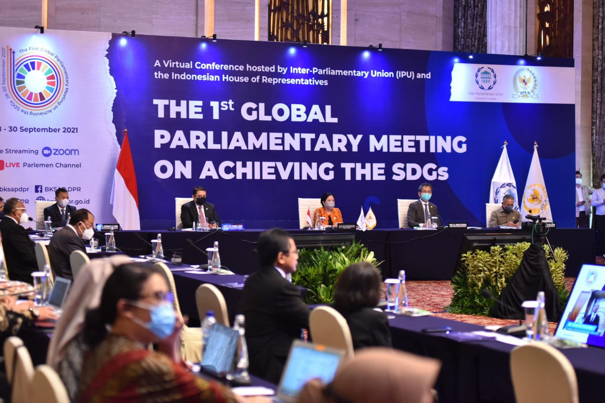

Sesuai dengan namanya, Sustainable Development Goals (SDGs) merupakan kumpulan program pembangunan berkelanjutan yang dijalankan oleh negara anggota Perserikatan Bangsa-Bangsa (PBB) atau United Nations (UN) semenjak tahun 2015 hingga kelak pada tahun 2030. Tujuan utama pembuatan SDGs adalah untuk mencapai taraf kehidupan yang lebih baik serta mengatasi permasalahan global yang marak terjadi. SDGs mengajak semua orang untuk peduli dan terlibat aktif dalam membantu menyelesaikan isu-isu dunia melalui langkah kecil hingga kebijakan global. Program-program SDGs mencakup bidang ekonomi, lingkungan, dan sosial, sebagaimana tercantum dalam 17 tujuan yang dimiliki SDGs. Semua tujuan dilaksanakan bersamaan supaya perkembangan berjalan secara seimbang. Apa saja ke-17 tujuan SDGs?
1. Tanpa kemiskinan, 2. Tanpa kelaparan, 3. Kehidupan sehat dan sejahtera, 4. Pendidikan berkualitas, 5. Kesetaraan gender,
6. Air bersih dan sanitasi layak, 7. Energi bersih dan terjangkau, 8. Pekerjaan layak dan pertumbuhan ekonomi, 9. Industri, inovasi, dan infrastruktur, 10. Berkurangnya kesenjangan,
11. Kota dan permukiman yang bekerlanjutan, 12. Konsumsi dan produksi yang bertanggung jawab, 13. Penanganan perubahan iklim, 14. Ekosistem lautan, 15. Ekosistem daratan, 16. Perdamaian, keadilan dan kelembagaan yang tangguh, 17. Kemitraan untuk mencapai tujuan
Diantara 17 tujuan SDGs, terdapat 3 yang sangat diprioritaskan, yakni tujuan ke-5 (kesetaraan gender), ke-13 (penanganan perubahan iklim), dan ke-16 (perdamaian, keadilan, dan kelembagaan yang tangguh) karena situasi yang mendesak dan harus segera diwujudkan. Misalnya, tujuan ke-5 didasari karena banyaknya kasus pelecehan seksual kepada perempuan dan anak serta sistem pernikahan dini yang masih terjadi. Sementara tujuan ke-13 fokus kepada solusi untuk mengakhiri pemanasan global. Tujuan ke-16 menekankan pentingnya menjaga perdamaian, mengangkat martabat manusia, dan bertekad untuk mengakhiri kasus pembunuhan.